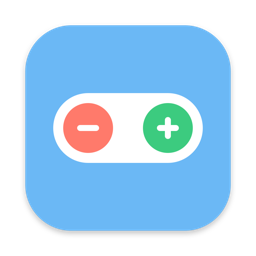

ClickShift
Use a Zwift Click controller as a keyboard on your Mac. Shift gears in MyWhoosh right from your handlebars.
Download for macOSFeatures
Native and light
Swift and SwiftUI. Lives in your menu bar.
Any key, any app
Map each button to the key you want. Works with any app that takes keyboard input.
Feels like a keyboard
Hold a button and its key repeats, just like a real key.
Reconnects on its own
If the controller drops, ClickShift picks it up again as soon as it's back.
Battery level
See how much charge your controller has left.
Private
No network access, no accounts, no tracking.
Supported controllers
| Controller | Buttons |
|---|---|
| Zwift Click (v1) | + − |
| Zwift Click v2 | + −, D-pad, A, B, Y, Z |
Default keys
| Button | Key | In MyWhoosh |
|---|---|---|
| + | K | Shift up (harder) |
| − | I | Shift down (easier) |
| D-pad | ↑ ↓ ← → | Arrow keys |
| A, B, Y, Z | 1 U 2 3 | — |
Install
- Download and open ClickShift.dmg, then drag ClickShift onto Applications.
- Open ClickShift. macOS blocks it the first time because it isn't notarized by Apple. Close the warning, go to System Settings › Privacy & Security and click Open Anyway.
- Allow Bluetooth when asked, and turn ClickShift on in System Settings › Privacy & Security › Accessibility so it can send key presses.
- Press any button on your Click. ClickShift finds it and connects.
Updating? Remove ClickShift from the Accessibility list and add it again, because each new version has a new signature. To check your download, get the .sha256 file from the release and run shasum -a 256 -c ClickShift-<version>.dmg.sha256.